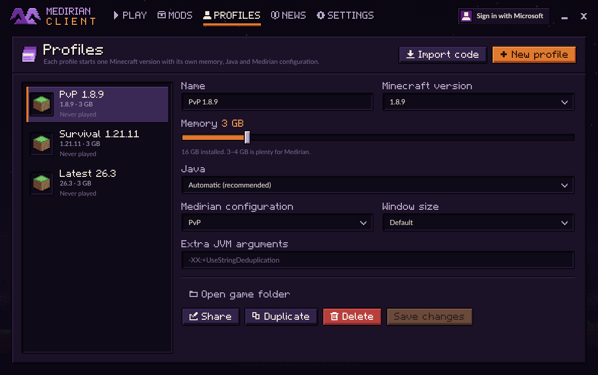
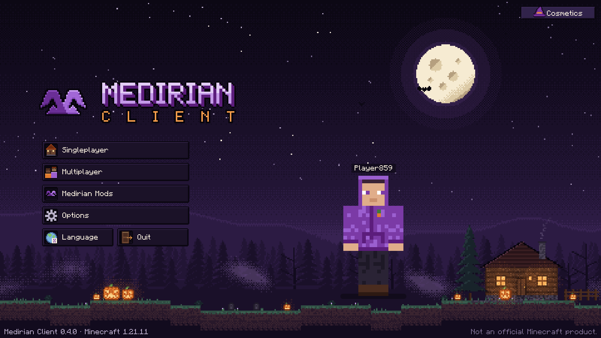
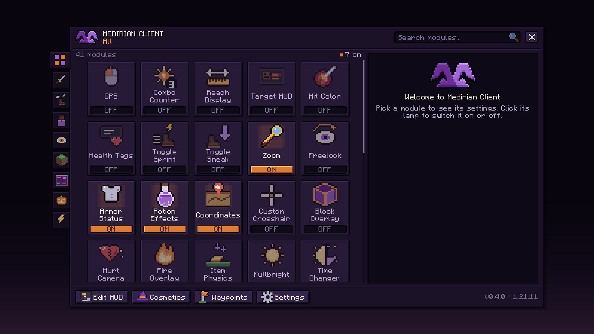
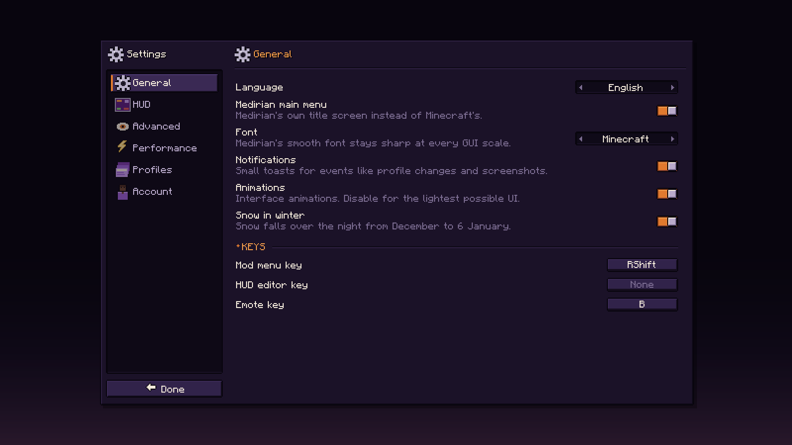
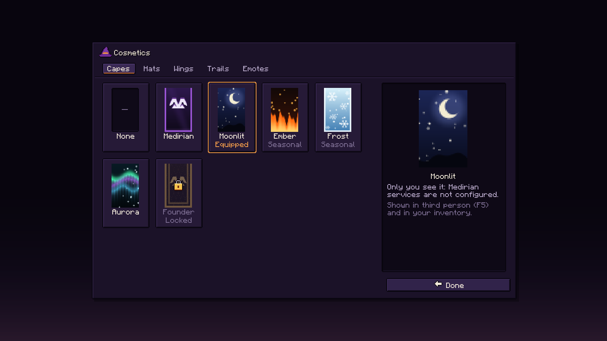
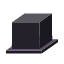

A modern Minecraft client built for performance, customization and a better way to play.
Launcher + client
Everything you need.
Medirian installs Minecraft and Java for you, then starts the game with its own menus, modules and HUD. One download, nothing to set up by hand.
-
Performance
Entity culling, Dynamic FPS, particle control and separate render distances help keep the game smooth.
-
HUD
A fully configurable HUD of independent widgets — drag, snap and scale each one in the HUD editor.
-
Mod Menu
Medirian's own menu for its 41 modules: categories, search, and a lamp that switches each one on or off.
-
Mods
Search Modrinth and install mods straight from the launcher, together with the mods they need.
-
Profiles
Separate profiles that never mix. Share one as a code and import someone else's in seconds.
-
Cosmetics
Capes, hats, wings, trails and emotes — and your own Minecraft skin in the launcher and the main menu.
-
Advanced Settings
Graphics, rendering, visibility, performance and interface in one place. Every option says what it does.
-
Multiple Minecraft Versions
1.8.9, 1.21.8, 1.21.11 and 26.3 with the same modules, HUD and cosmetics. Java is installed for you.
Screenshots
See it for yourself.
Real screens from Medirian Client 0.4.0 — the launcher and the game, nothing mocked up.





Mods from Modrinth
Your mods. Your way.
The launcher's Mods tab searches Modrinth and installs a mod into the profile you pick — together with the mods it needs. Medirian checks the Minecraft version and loader first, and tells you plainly when a mod doesn't fit.
- Fabric mods, and Legacy Fabric mods for 1.8.9
- Required dependencies installed with the mod
- Switch a mod off, update it or remove it
- Mods stay inside their own profile
Medirian uses Modrinth only — mods download straight from Modrinth, through its official API.
Browse mods on Modrinth- Search Modrinth
- Select Mod
- Install to Profile
- Launch Minecraft
Profiles
One client. Multiple setups.
A profile is one way to play: a Minecraft version with its own memory, Java and game folder, started with the Medirian configuration you choose for it. Mods, settings and worlds of one profile never end up in another.
Every profile can have its own
- Modules
- HUD
- Settings
- Mods
- Configuration
Example setups
- PvP Configuration: PvP
- Performance Configuration: Performance
- Vanilla+ Configuration: Default
HUD
Small widgets. Exactly where you want them.
Every HUD module is its own widget: drag it, snap it to the guides and scale it in the HUD editor. Pick the look — Liquid Glass, with a soft blur of the world behind it, or Classic.
Advanced settings
Fine-tune everything.
Settings → Advanced puts Minecraft's own options next to Medirian's, in five sections. They change exactly as in Minecraft's option screens, only the options your Minecraft version has are shown, and each one says what it does.
Players, entities, dropped items, particles, name tags and cosmetics can each stop being drawn beyond a distance you choose, and the distance fog can start later or be switched off.
- Render distance12 chunks
- GraphicsFancy
- Smooth lighting
- CloudsFancy
- VSync
- Field of view70
- Distance fogMinecraft
- Damage tilt100%
- Weather Changer
- Block Overlay
- Item Physics
- Fullbright
- Player render distanceNo limit
- Entity render distanceNo limit
- Item render distance48 blocks
- Particle distanceNo limit
- Name tag distanceNo limit
- Cosmetic render distanceNo limit
- Performance modeBalanced
- Animated textures
- Entity Culling
- Particle Control
- Dynamic FPS
- GUI scaleAuto
- HUD scale1.00x
- Animations
- Notifications
- Chat opacity100%
Illustration of Settings → Advanced; the values are examples.
Cosmetics
Make it yours.
Pick a cape, a hat, wings, a trail and emotes in the Cosmetics screen. Other Medirian players see them when you're signed in to Medirian services, and a hat hides while you wear a helmet.
- 6 capes

4 hats- 3 pairs of wings
- 4 trails
- 3 emotes
Your own Minecraft skin shows up in the launcher and in the game's main menu.
Try a cape: Moonlit
Built differently.
Performance focused
Culling, Dynamic FPS and per-kind render distances are built in, not bolted on.
Highly customizable
41 modules, each with its own settings and key bindings.
Built-in mod management
Modrinth search, dependencies and updates right in the launcher.
Custom HUD
Separate widgets in Liquid Glass or Classic, placed exactly where you want.
Profiles
Setups that never mix, and a short code to share one.
Cozy pixel-art identity
A Halloween night all year round, in the launcher and in the game.
Regular updates
The launcher and the client update themselves; your profiles and worlds stay put.
Download Medirian Client
One installer. It sets up the launcher for your Windows user — no administrator rights — and the launcher keeps itself and the client up to date.
- 1
Download MedirianClientSetup.exe.
- 2
Run it. Medirian Client installs for your Windows user, with shortcuts on the desktop and in the Start Menu.
- 3
Open Medirian Client, sign in with Microsoft and press Play. Minecraft and Java are installed for you.
Medirian Services ·
Questions
What is Medirian Client?
A launcher and a Minecraft client in one. The launcher installs Minecraft and Java, keeps your profiles and mods, and starts the game with Medirian: its own main menu, Mod Menu, 41 modules, a configurable HUD and cosmetics.
Which Minecraft versions are supported?
Minecraft: Java Edition 1.8.9 (on Legacy Fabric), 1.21.8, 1.21.11 and 26.3 (on Fabric). All four get the same modules, HUD and cosmetics.
Is Medirian free?
Yes. Downloading and playing with Medirian costs nothing, and there is nothing to buy in the launcher or the game. You need your own copy of Minecraft: Java Edition.
How do I install Medirian?
Download MedirianClientSetup.exe and run it — no administrator rights needed. Then open Medirian Client, sign in with Microsoft and press Play. Uninstall it like any other app in Settings → Apps; your profiles and worlds are kept.
Can I install mods?
Yes — in the launcher's Mods tab, into the profile you choose. Medirian installs the mods a mod needs, checks that it fits your Minecraft version and loader, and lets you switch mods off, update or remove them.
Where do mods come from?
From Modrinth, through its official API. Medirian doesn't host mods itself and doesn't use CurseForge.
Can I import profiles?
Yes. Profiles → Import code takes a code like MDN-7K4X-92QP-L8F2 made with Share, shows what the profile contains and asks before replacing anything. Codes last 90 days. Medirian configurations can also be kept in Medirian Cloud (Settings → Profiles in the game).
Does Medirian require a Microsoft account?
Yes. You sign in with the Microsoft account that owns Minecraft: Java Edition, on Microsoft's own sign-in page — Medirian never sees your password.
Is Medirian available on macOS or Linux?
Windows 10 and 11 come first: that's where Medirian is built and tested. The launcher is also built for macOS and Linux; when a release includes those builds, they're listed in the Download section above.